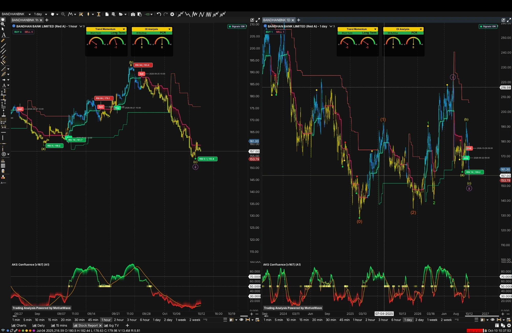

Financials — Private-sector bank (Kolkata): microfinance-led EEB (emerging entrepreneurs business) at 34% of advances, with a growing secured and non-microfinance book
Generated On10 October 2026
Revision History
Date
Version
10/10/26
v1 — initial report
BSE: 541153 · NSE: BANDHANBNK · Private-sector bank, microfinance-led · Kolkata, West Bengal
Bandhan Bank Limited
Q1 FY27 PAT ₹502 Cr (+35% YoY) on provisions −40%, PPOP −18.6% · NIM 6.2% · GNPA 3.15% / NNPA 0.93% · CAR 18.2% · Promoter 37.54% · ~29% below 52-week high (₹220.76)
₹157.00 ▲ +0.94%
Report date: 10 Oct 2026 (close of Fri 9 Oct) | Mkt Cap: ₹25,295 Cr | Book Value: 0.99x | MarketSmith Master Score: C (48)
● Sentiment: De-rated after RoA-guidance cut; targets stale
● Governance: CFO exit, new chairman, promoter glide path to 26%
01
Company Overview
What They Do
Bandhan Bank Limited, headquartered in Kolkata, began as a microfinance lender and has operated as a universal bank since 23 Aug 2015. It serves about 3.2 crore customers through nearly 6,400 outlets (branches, banking units, doorstep service and GRUH centres; ICRA counts 6,388) across 35 of 36 states and UTs, with more than 74,500 employees. Its core is EEB — the emerging entrepreneurs business, i.e. group microfinance lending — now 34% of advances (40% a year ago, 50% at Mar-24). Around it the bank has built a secured and non-microfinance book (~56–57% secured): wholesale/commercial, housing, small-business and retail loans. About 33% of branches are rural and 37% semi-urban (CRISIL).
At 30 Jun 2026: gross advances ₹1,55,555 Cr (+16.4% YoY), deposits ₹1,64,886 Cr (+6.6%), CASA 29.4%, net worth ₹26,170 Cr, CAR 18.2% (Tier I 17.5%). Q1 FY27 (reported 21 Jul 2026): PAT ₹502 Cr (+35% YoY, −6% QoQ), NII ₹2,920 Cr (+5.9%), NIM 6.2%, GNPA 3.15%, NNPA 0.93%. The profit rise came from provisions falling 40%; pre-provision profit fell 18.6% on opex +19%. A provisional Q2 FY27 business update (3 Oct 2026, not verified against the filing) shows loans ₹1,58,335 Cr (+13.1%), deposits ₹1,72,689 Cr (+9.2%) and CASA down to 26.71%.
Key Competitive Advantage: A two-decade field-collection franchise in eastern and rural India (about 73% of the EEB book is in the East and North-East; 61% of borrowers have Bandhan as their sole lender), RBI licensing, and strong capital (CAR 18.2%, Tier I 17.5%; net worth 18.5x net NPAs) that gives room to grow. The edge is distribution and collections, not funding cost: CASA of 29.4% against a private-bank average of 36% and a cost of interest-bearing funds of 6.04% against 5.00% (ICRA). Both ICRA and CRISIL rate it AA- / Stable. Detail in §02 and §16.
Loan-Book Mix (30 Jun 2026)
Share of gross advances at 30 Jun 2026 as given on the Q1 FY27 earnings call (transcript filed on NSE 27 Jul 2026, read by the research stream): EEB group 23% + EEB individual/SBAL 11% (= EEB 34%, ₹52,641 Cr; CRISIL agrees at 34%) + wholesale 33% + housing 22% + retail and other 11% = 100%. Rupee values are my arithmetic on the rounded percentages. ICRA cuts the book differently: commercial 33% / retail plus housing 33% / EEB 34% (consistent: 22% + 11% = 33%); Kotak puts SME loans at ~20% and mortgages at 22%. Caveat: the call mix is a secondary read of a rounded slide; check the investor presentation (slides not located).
Earnings-Quality Rating: Where The Profit Comes From
Quality rated 2 / 5 ■■■■■
Bull: GNPA down to 3.15% from 4.96% a year earlier; fresh NPA generation 2.91% annualised (4.76% in Q1 FY26); credit cost 1.8% (3.5% a year ago, Arihant); non-EEB book now 66% and growing >20%; capital and liquidity strong (LCR 134–147%); both agencies AA- / Stable.
Bear: profit growth came from provisions, not operations — PPOP −18.6%, cost-to-income 61.5% (30.5% in FY22), RoA 1.0% against a guide now cut to 1.2–1.4% exit; reported PCR 71.1% (CFO) vs 85.9% only with technical write-offs; FY25 was flattered by ~₹713 Cr of one-offs (CRISIL); cumulative write-offs are large.
02
Competitive Advantage (Moat) Analysis
Dimension
Rating
Commentary
Brand Strength
Moderate
Strong recall in eastern India and 3.2 crore customers (ICRA: ‘high customer vintage, loyalty’). But the brand is tied to microfinance, CRISIL puts complaint intensity at ~0.83 per ₹ crore of loans, ‘higher compared with peer’, and the 12–17% single-day share drops in 2026 show investor trust is fragile. Rating is my judgement from the evidence.
Network Effects
Weak–Moderate
A branch-and-field-agent model (~6,400 outlets, 74,500+ staff) builds local relationship density, but that is scale, not a network effect. About 61% of borrowers are unique to Bandhan (so ~39% also borrow elsewhere).
Switching Costs
Weak
Group-loan borrowers can move lenders. On deposits, growth has been helped by above-peer rates (ICRA), so balances are price-sensitive; CASA plus retail term deposits at 74% of deposits (68% a year earlier) is the better sign, while CASA alone slid to 26.71% in the provisional Q2 update.
Cost Advantage / Barriers
Weak on funding; moderate on origination
Cost of interest-bearing funds 6.04% (ICRA) / 6.4% annualised (CRISIL; different definitions) against a 5.00% private-bank average; CASA 29.4% vs 36%. Offsetting: a two-decade field-collection record in hard geographies, RBI licensing as an entry barrier, and capital strength (CAR 18.2%, Tier I 17.5%). In secured and wholesale lending it competes with larger private banks that fund more cheaply; its edge there is limited to eastern reach.
Patents / Proprietary Tech
None found
No patents or proprietary underwriting technology found beyond the bank’s own ‘data-driven insights’ language. The brand and data on 3.2 crore customers are the only intangibles. ICRA flags data security and privacy as a social vulnerability and a source of possible regulatory censure.
What This Moat Does NOT Protect Against
Microfinance concentration and event risk: EEB is still 34% of advances; EEB GNPA is 5.9% (Jun-26) and the stressed EEB book (NPA + SMA-1 + SMA-2) is ₹3,984 Cr, ~8% of EEB (₹5,770 Cr, 11%, at Jun-25). CRISIL’s “9.0% a quarter ago” EEB NPA comparison looks like the Jun-25 figure, so treat that line as ambiguous. Geography: West Bengal is 24% of the total book and 44% of microfinance exposure (CRISIL; the two figures are different bases, not a conflict); the top five states (West Bengal, Maharashtra, Gujarat, Bihar, Madhya Pradesh) are ~57%; Assam plus West Bengal were 27% of the book (43% in Mar-20). Policy: a Bihar Micro Finance Institutions bill (2026) reportedly needs prior state permission and state registration — Bihar is a top-5 state; the final text and whether it was enacted were not verified. The harmonised microfinance regulation: 2026 status not found. Write-offs: CRISIL cites cumulative write-offs of ₹15,207 Cr over FY21–24; another line gives ₹9,925 Cr (FY23–24) plus ₹3,036 Cr of NPAs sold to ARCs — different cuts, both shown. Earnings flattering: FY25 profit included ~₹713 Cr of one-offs (CGFMU, Assam relief fund, ECLGS; CRISIL’s earlier rationale), so FY25’s RoA of 1.5% is a flattered base against 0.6% in FY26. Guardrails: industry data say ~95.2% of portfolio was serviceable under MFIN guardrails by Mar-26 (87.8% a year earlier, CreditAccess); Bandhan-specific compliance data: not found. Regulatory hygiene: small RBI penalties (rising count: three in ~25 months) — the Aug 2025 one cited back-end manual changes without audit trail, and the Apr 2026 one KYC non-compliance (plus loans linked to directors per one source).
Litigation, Regulatory & Contingent Items
Item
Detail (as reported)
Income-tax demand AY 2023-24
₹119.38 Cr (received 25 Mar 2025; bank intends to appeal)
₹1,231.29 Cr paid to Mar-24 incl. first claim ₹916 Cr; further ₹314.68 Cr assessed (₹289.59 Cr after ₹25.09 Cr recoveries, Jan 2025 filing)
RBI penalties
₹1 Cr (2019); ₹29.55 lakh (4 Mar 2024); ₹44.70 lakh (26 Aug 2025); ₹41.80 lakh (21 Apr 2026)
Contingent liabilities — total
NOT COMPUTED — FY26 annual report not read (guarantees, derivatives, disputed taxes)
Sources: bank filings and press coverage via the governance and moat research streams. Each demand is small against net worth of ₹26,170 Cr (CRISIL); the bank says none is material. The one number a bank report needs here — total contingent liabilities — is NOT COMPUTED because the annual report was not read.
Synthesis: A regional niche franchise with a narrow moat: distribution and collection depth in eastern and semi-urban India, not pricing power or cheap funding. Ratings: ICRA [ICRA]AA- (Stable) 25 Sep 2026 and CRISIL AA-/Stable 28 Sep 2026, both read in full (§16); neither raises a governance concern. Moat ratings are mine.
03
Profit Growth From Provisions, Not Operations; the RoA-Guidance Cut and CASA / Funding-Cost Squeeze; Governance Turnover and the Promoter Glide Path
Q1 FY27 PAT
₹502 Cr
+35% YoY · −6% QoQ
Q1 PPOP
−18.6%
₹1,358 Cr; opex +19%
Provisions
−40%
₹683 Cr vs ₹1,147 Cr
Exit-RoA guide
1.2–1.4%
cut from 1.6–1.8% (21 Jul)
CASA (Sep-26*)
26.71%
from 29.40% · *provisional
Promoter (BFHL)
37.54%
RBI mandate: 26% by Aug 2030
Theme 1 — Where the Profit Came From: Read It Two Ways
Bull: reported asset quality has improved markedly — GNPA 3.15% from 4.96% a year ago, fresh NPA generation 2.91% annualised vs 4.76%, EEB slippages ₹604 Cr vs ₹690 Cr the previous quarter, EEB stressed book ₹3,984 Cr vs ₹5,770 Cr; non-interest income ex-treasury was up 22% and third-party distribution income up 47% (call); NII +5.9% on advances +16.4%; collection efficiency 98.9% bank-wide.
Bear: of the ₹154 Cr rise in pre-tax profit, provisions added +₹464 Cr and operations took away ₹310 Cr (my arithmetic from the table below). Cost-to-income is 61.5%. Q1 FY26 had ~₹250 Cr of treasury gains and Q1 FY27 carried a ₹61 Cr one-time gratuity provision, so both ends of the comparison are noisy. Profit missed Arihant’s ₹609 Cr estimate (−17.6%, my arithmetic) while Motilal Oswal called it a 9% beat — broker views conflict.
Conflicts kept: PCR is 85.9% in the press release (includes technical write-offs) but 71.1% reported on the call (74.3% with security-receipt provisions); credit cost 1.8% (PR/call) vs 1.3% (CRISIL, Q1 FY27 annualised) and 3.5% vs 2.4% a year earlier; EEB collection efficiency 98.5% (PR, call) vs 98.9% bank-wide; Q4 FY26 provisions ₹677 Cr (PR) vs ₹680 Cr (press); Q3 FY26 profit ₹206 Cr (PR) vs ₹212 Cr (another source).
Q1 FY26 → Q1 FY27 Profit Bridge (₹ Cr)
₹ Cr
Q1 FY26
Q1 FY27
Change
Net total income
~3,483
3,524
+1.2%
NII
2,757
2,920
+5.9%
Non-int. income
~726
604
−16.8%
Operating expenses
~1,815
2,166
+19%
Pre-provision profit (PPOP)
1,668
1,358
−18.6%
Provisions
1,147
683
−40%
Pre-tax profit (own)
~521
~675
+~30%
Profit after tax
372
502
+35%
Source: Q1 FY27 press release and call; ‘~’ = my arithmetic (Q1 FY26 non-interest income and opex backed out of the reported −16.8% and +19% changes; they tie to PPOP of 1,668 within rounding). Pre-tax profit is PPOP minus provisions, not a reported line.
Theme 2 — The RoA Guide Was Cut and the Funding Mix Is Moving the Wrong Way
CASA ratio
Date
Note
41.6%
FY22 (Mar-22)
PR
39.3%
FY23
PR
37.1%
FY24
PR
31.4%
FY25
PR / CRISIL
29.3%
FY26 (Mar-26)
PR
27.1%
Jun-25
CRISIL
29.4%
Jun-26
PR; ₹48,479 Cr
26.71%
Sep-26 (provisional)
₹46,131 Cr; Sep-25 27.97%
Sources: bank press releases, CRISIL, ICRA; Sep-26 figure is the provisional Q2 FY27 business update of 3 Oct (Kotak Neo / Whalesbook; not verified against the filing, though loans, deposits, CASA and ratios tie to one another in my arithmetic). Private-bank average CASA 36%. In the provisional update deposits rose ₹7,803 Cr QoQ while CASA fell ₹2,348 Cr, so term deposits rose ~₹10,151 Cr (own); bulk deposits +10% QoQ. LCR 137.88%; collection efficiency 98.9% (EEB 98.6%).
Guidance: on 21 Jul management cut the Q4 FY27 exit RoA to 1.2–1.4% from 1.6–1.8% (about 30 bps from NIM and 10 bps from opex) and dropped the path to a 6.5% NIM — NIM is now held near 6.2%. Q1 RoA was 1.0%, so the guide needs +20–40 bps within three quarters (own). The stock fell 16.9% on 22 Jul (₹208.83 → ₹173.50, Yahoo closes; sources say −14% to −17%) and a further ~9.5% since. On 7 Oct the RBI raised the repo rate 25 bps to 5.50% (secondary sources), and a mix shifting to term deposits works against NIM; a higher repo helps asset yields first, deposits reprice later (my inference).
Theme 3 — Governance Turnover and the Promoter Glide Path
Turnover: CFO Rajeev Mantri resigned 29 Jun 2026 (last day 25 Sep; the letter says 26 Sep) and a successor is not confirmed — one search summary names Vinay Jain as interim CFO; Debasish Panda became independent chairman on 5 Jul 2026 when Dr Anup Kumar Sinha’s term ended at the age limit; three independent directors left in 2025 plus Santanu Mukherjee on 16 Dec 2025; MD & CEO Partha Pratim Sengupta’s RBI-approved three-year term runs to about Oct/Nov 2027 and no succession plan was found. Promoter: Bandhan Financial Holdings (BFHL) must fall from 39.07% (Dec-25, bank filing, no pledge) to 26% by Aug 2030; Screener and MarketSmith both show 37.54% at Jun-26. That is ~11.5 percentage points, ~18.6 Cr shares or about ₹2,900 Cr at ₹157 (my arithmetic). Scanx reports open-market sales of ~3.31 Cr shares (~2.06%) between Sep 2025 and May 2026 — a pace of ~3 points a year, about what the glide path needs (my arithmetic) — and the promoter reportedly rules out block deals. Reported but unreliable: a ₹6,555 Cr QIP (26 Jun 2026, one aggregator) conflicts with the share count (161.10 Cr), net worth (up only ₹595 Cr in Q1) and both rating rationales — not used.
Source-quality note: primary reads: the ICRA rationale (25 Sep 2026) and CRISIL rationale (28 Sep 2026), both in full; the Q1 FY27 press release (21 Jul 2026) and earnings-call transcript (NSE filing 27 Jul 2026); Arihant Capital and Kotak notes (22 Jul 2026); the Dec-2025 shareholding pattern filed by the bank; Screener and Yahoo data at the 9 Oct 2026 close. Secondary and to be checked against exchange filings: the March 2026 stake-sale report, any pledge or QIP claim, the Q2 FY27 business update, AGM outcomes, the stock-split vote, and the open-market-sale tally. The FY26 annual report, investor presentation, India Ratings and a current CARE rating were not found. Items I computed are marked ‘own’ or ‘my arithmetic’.
04
Overall Sentiment & Momentum Prediction
Key Watch-Item
⚠ Q2 results: does the CASA slide to 26.71% show up in NIM?
The provisional Q2 update (3 Oct) has CASA at 26.71% from 29.40%, with term and bulk deposits filling the gap just as the RBI turned to ‘calibrated tightening’ (7 Oct). Management held NIM near 6.2% and cut the exit-RoA guide in July; Q2 will show whether 6.2% held. The results date is not announced (30 Oct in 2025 and 25 Oct in 2024 — late October is my inference). The cause of the 8 Oct fall (−4.57%) was not found.
Overall Sentiment
CAUTIOUS de-rated, stale targets
MarketSmith Master Score C (48): EPS Rating 74 FAIR, Price Strength 39 POOR, Group Rank 111 of 197. Sell-side is mostly Buy/Hold (Trendlyne mean ₹216 from 7 brokers, +38% on ₹157) but every target pre-dates the fall from ~₹177 to ₹157; MarketsMOJO’s quant score downgraded to Sell on 8 Oct (44.0). Supports: funds holding 345 (+13.49%), mutual funds 8.99% → 19.65% in four quarters, P/B 0.99x, Graham screen 76%. Against: FIIs 24.34% → 18.64% in a year.
Momentum Prediction
BEARISH TREND → OVERSOLD, CANDIDATE LOW
Daily Trend Momentum gauges −3 / −3 with a Sell on 9 Oct; 1H gauges −3 / −1 and 1H RSI 5.1 at the ₹153.8 low (~8 Oct). The labelled count has ⓘⓘ as an a–b–c zigzag whose (c) low at ₹153.79 may be the end of the correction — early and unconfirmed. First hurdles ₹161.30, then ₹170 and ₹179; support ₹153.79.
Framing note: This is a bank at about book value (P/B 0.99x) whose reported credit costs are falling but whose operating profit is shrinking, whose own guidance was cut, and whose funding mix is moving against it, while the technical picture shows an extreme oversold reading after a ~29% fall from the high. The bull case (asset-quality repair, 18.2% CAR, non-EEB growth above 20%, forward P/E under 10x on broker estimates that need earnings to roughly double) and the bear case (PPOP −18.6%, RoA guide cut, CASA 26.71%, repo hike, promoter and management overhang) are both live; the 22 Jul rout has been followed by a further ~9.5% fall.
Credit and deposits. RBI cites system credit growth of 18.1%; Systematix (6 Oct) ~19% YoY; Motilal Oswal expects ~14% for FY27 (system 17.7% at 15 Jun); India Ratings expects advances +13% and deposits +11.4% for FY27 with the loan-to-deposit ratio rising to 83.2%. The RBI fortnight to 15 Jun showed credit ~+17.4% and deposits ~+12%. Sources differ on date and horizon; no September RBI sectoral data was found. Bars show Q2 FY27 provisional updates (unverified against filings; RBL’s +40% / +34% is far above the +23% it showed for Q1 and should be checked). Rates: on 7 Oct the RBI raised the repo rate 25 bps to 5.50% (first hike since Feb 2023; stance to ‘calibrated tightening’; SDF 5.25%, MSF 5.75%; CRR 4.50%) — secondary sources, check RBI releases; the vote split is conflicting (unanimous hike vs a 4–2 stance vote); next MPC 2–4 Dec, with Nomura and SBI Research reportedly expecting two hikes by December (a forecast). NIM: Systematix, Motilal Oswal and JM Financial expect pressure; Equirus sees deposit costs near a bottom with recovery in 2H FY27; India Ratings expects margins to improve. For a deposit-heavy, floating-rate book a hike lifts asset yields first and deposit costs follow — the lever is deposits and CASA (my inference). Asset quality is broadly steady with credit costs expected flat; the weak monsoon (13% below normal, per RBI) is the flagged risk.
Microfinance Cycle
Bandhan’s EEB share of advances: 50% (Mar-24), 40% (Jun-25), 34% (Jun-26) — CRISIL. Industry: MFIN reports the portfolio grew >3% QoQ in Q4 FY26, the first rise after seven quarters of contraction, to ₹3,25,174 Cr at 31 Mar 2026, with disbursements ₹77,524 Cr (a seven-quarter high) and PAR 31–180 days down to 2.0% from 4.4% in December. Equifax instead shows the portfolio at ₹3.38 lakh Cr, −10% YoY — a conflict of definition and period, not resolved. Banks supplied 77.4% of NBFC-MFI borrowings in FY26; a ₹20,000 Cr credit guarantee scheme was launched in Mar 2026; banks scaled back microfinance fastest while NBFC-MFIs gained share. Risks: weak monsoon / El Niño, Bihar’s bill. Not found: MFIN Q1 FY27 data, a small-finance-bank microfinance split, state-by-state EEB data beyond West Bengal, a clean sector-relative 1Y return (index figures conflict across dates), and NSE index membership (Nifty Bank / Private Bank / Financial Services).
06
Shareholding — 4 Qtrs
Category
Sep'25
Dec'25
Mar'26
Jun'26
Δ (3q)
Promoters
40.29%
39.74%
38.98%
37.54%
▼ 2.75pp
FIIs
23.43%
22.31%*
22.07%
18.64%
▼ 4.79pp
DIIs
n/f
n/f
22.33%
27.47%
▲ 5.14pp (1q)
Public / others
n/f
n/f
16.55%
16.26%
▼ 0.29pp (1q)
Mutual funds (MarketSmith)
8.99%
11.79%
15.6%
19.65%
▲ 10.66pp
Sources: Mar-26 and Jun-26 from Screener; Sep-25 and Dec-25 from aggregators (Upstox, MarketsMOJO, Stockezee; definitions differ); the mutual-funds line is MarketSmith. *The bank’s own Dec-2025 filing gives FPIs 19.15% + 0.69% = 19.84% (insurance 5.52%, LIC 3.69%) against the aggregator’s 22.31% — unreconciled (depository receipts or other foreign categories, unverified). Promoter group at Dec-25 = BFHL 39.07% (62.94 Cr of 161.10 Cr shares) + Bandhan Mutual Fund 0.67% (promoter group since 15 Apr 2025 per RBI), no pledge, NDU or encumbrance. Year ago (Jun-25, Screener): promoters 40.92%, FIIs 24.34%, DIIs 16.52%, public 18.14%. The promoter’s fall since Dec-25 (−2.2 points) is not reconciled to a filing: Scanx reports BFHL open-market sales of ~3.31 Cr shares (~2.06%, Sep-25 to May-26, stake ~40.00% → ~37.93%), which would explain most of it, but 37.93% vs 37.54% leaves ~0.4 point open. Retail holders fell from 8.59 lakh (Mar-25) to 6.64 lakh (Jun-26), −23% (my arithmetic). The Sep-26 pattern is due mid-October. RBI mandate: promoters to 26% by Aug 2030.
Major Holders (MarketSmith, Jun-26)
Holder
Stake
Bandhan Financial Holdings Ltd (promoter)
37.53%
SBI Balanced Advantage Fund
5.49%
Life Insurance Corporation of India
3.69%
Kotak Mahindra Trustee Co A/C Kotak Mult… (name truncated)
3.38%
Government Pension Fund Global
1.84%
ICICI Prudential Equity Arbitrage Fund
1.72%
MarketSmith lists BFHL at 37.53% against 37.54% for the whole promoter group, which suggests the Bandhan MF line is no longer counted in the headline — not verified. A named holder is not necessarily a net buyer; arbitrage funds hold paired positions.
07
Stock Performance
Return (to 8 Oct)
Bandhan
Sensex
1 week
−11.21%
−0.44%
1 month
−9.51%
−5.27%
Year to date
+6.79%
−15.99%
1 year
−3.14%
−12.45%
3 years
−38.49%
+8.48%
5 years
−54.96%
+19.20%
MarketsMOJO, as of 8 Oct 2026; Sensex figures as printed by that source. Other 1-year figures: −3.9% (my arithmetic, Yahoo closes ₹163.30 on 9 Oct 2025 → ₹157.00) and Screener’s −7% 1-year price CAGR, a basis I could not reconcile — three vendors, not averaged. No clean sector-relative return exists in the sources (§05).
52-Wk Low₹134.25Yahoo; Screener ₹134, MarketsMOJO ₹134.30; MarketSmith’s annual table shows ₹137 for 2026. Price is ~17% above (MarketSmith OL +16.95%)
Path: ~₹208.83 (21 Jul close) → ₹173.50 (22 Jul, −16.9% on the RoA-guidance cut; intraday low ₹171.56; sources say −14% to −17%) → ₹175.30 (2 Oct) → ~₹163.10 (7 Oct) → ~₹155.65 (8 Oct, −4.57%; intraday ₹154.20–163.50; the user’s chart low ₹153.79; cause not found) → ₹157.00 (9 Oct, +0.94%); down ~24.8% from 21 Jul (my arithmetic). Earlier: 16 Mar 2026 fell as much as 12.2% (low ₹154.15 per one source) on a promoter stake-sale report — the bank said it was not aware of any such development (secondary). The 2026 path before July, and 3–7 Oct daily closes, were not found.
Net total income ₹3,524 Cr (+1.2% YoY); non-interest income ₹604 Cr (−16.8%; Q1 FY26 had ~₹250 Cr of treasury gains, ex-treasury +22%); cost-to-income 61.5% vs 52.1% (Arihant); RoA 1.0%, RoE 7.7%; gross slippages ₹1,079 Cr; technical write-off ₹597 Cr and a ₹291 Cr housing NPA sale to an ARC in the quarter. QoQ NII is Screener-derived ₹2,921 Cr vs ₹2,796 Cr. Screener’s NII is ‘revenue minus interest’ (my arithmetic) and may differ by ₹1 Cr from the press release.
Valuation & Balance-Sheet Tiles
TTM Total Income
₹24,456 Cr
MarketSmith ‘sales’ = the sum of its four quarterly income figures (5,900 + 6,122 + 6,199 + 6,234 = ₹24,456 Cr, my arithmetic); not comparable to NII
P/E (TTM)
18.7x
₹157 ÷ TTM EPS ₹8.40 (Screener; MarketSmith 19). Mcap ÷ TTM PAT ₹1,354 Cr = 18.7x (own); the quarterly EPS in §17 sums to the same ₹8.40
Forward P/E
~9.6x–9.9x
₹157 ÷ MarketSmith FY27e ₹16.38 = 9.6x · ÷ Arihant FY27E ₹15.8 = 9.9x (Arihant: 10.7x at its 22 Jul price). Both need FY27 EPS ~2x FY26’s ₹7.60: Q2–Q4 must average ~₹682 Cr PAT vs ₹502 Cr (own)
P/B · P/ABV
0.99x · ~1.02x
Screener BV ₹159; own net worth ₹26,170 Cr ÷ 161.1 Cr = ₹162 (0.97x); adjusted book ₹153.7 after deducting net NPAs of ₹1,412 Cr only (own). Arihant: 1.0x P/ABV
Years to March. ‘~’ = my arithmetic (opex = net revenue − PPOP; FY22–23 provisions; TTM sums of the last four quarters). FY24 NII is ₹10,319 Cr in the FY25 press release and ₹10,326 Cr in another source (I use ₹10,319 Cr; with it NII + non-interest income − opex = PPOP exactly). FY25 provisions: ₹3,765 Cr (PR) vs ₹4,329 Cr (Arihant’s table, probably a different definition). FY25 included ~₹713 Cr of one-offs (CRISIL). FY26 profit fell 55% on NII −5.8%, opex +9% and interest reversals (CRISIL). FY22–FY26 (my arithmetic): opex CAGR 21.6% vs NII CAGR 5.6%; gross advances +55% (CAGR 11.6%) and deposits +73% (14.6%).
Annual Ratios — FY22–FY26
Year
NIM
C/I
RoA / RoE
GNPA / NNPA
CASA
CAR
DPS ₹
FY22
8.2%
30.5%
n/f
6.46 / 1.66%
41.6%
20.1%
nil
FY23
7.2%
39.5%
n/f
4.87 / 1.17%
39.3%
19.8%
1.50
FY24
7.3%
~46.8%
1.4 / 10.7%
3.8 / 1.1%
37.1%
18.3%
1.50
FY25
7.1%
~48.9%
1.5 / 11.6%
4.7 / 1.3%
31.4%
18.7%
1.50
FY26
6.1%
~56.7%
0.6 / 4.8%
3.3 / 1.0%
29.3%
18.0%
1.50*
*FY26 DPS recommended. FY22 RoA/RoE and FY23 annual RoA/RoE: not found (Q4 FY23 alone: RoA 2.2%, RoE 17%). Conflicts: FY25 RoE 11.6% (PR) vs 11.9% (Arihant); FY26 NIM 6.1% (PR) vs 5.94% (Arihant’s calculation); FY23 and FY22 net-NPA rounding differs slightly between PR text and table. Cost-to-income FY24–FY26 is my subtraction (not checked against annual reports). Credit cost: 2.0% FY25, 2.1% FY26 (CRISIL). FY25 advances ₹1,36,995 Cr, FY26 ₹1,54,233 Cr gross (FY22–23 include off-book).
Quarterly Trend — Last 9 Quarters
Quarter
NII
PPOP
Prov.
PAT
NIM
GNPA / NNPA
C/I
Q1 FY25
~3,005
n/f
n/f
1,063
n/f
4.23 / 1.15%
n/f
Q2 FY25
~2,934
n/f
n/f
937
7.4%
4.68 / 1.29%
48.4%?
Q3 FY25
~2,815
n/f
n/f
426
6.9%
4.68 / 1.28%
n/f
Q4 FY25
2,756
1,571
1,260
318
6.7%
4.71 / 1.28%
54.5%
Q1 FY26
2,757
1,668
1,147
372
6.4%
4.96 / 1.36%
52.1%
Q2 FY26
2,589
1,310
~1,153
112
5.8%
5.02 / 1.37%
n/f
Q3 FY26
2,688
1,445
1,155
206
5.9%
3.33 / 0.99%
57.2%
Q4 FY26
2,796
1,441
677
534
6.2%
3.27 / 0.97%
59.6%
Q1 FY27
2,921
1,358
683
502
6.2%
3.15 / 0.93%
61.5%
NII for Q1–Q3 FY25 and Q1 FY27 is Screener revenue minus interest (my arithmetic; press release ₹2,920 Cr for Q1 FY27). ‘n/f’ = not found. The ‘48.4%?’ is Arihant’s Q2 FY26 note column that I read as Q2 FY25 — unverified. Q4 FY26 provisions ₹677 Cr (PR) vs ₹680 Cr (press); Q3 FY26 PAT ₹206 Cr (PR) vs ₹212 Cr (other). FY26 quarters sum to the annual: PAT 372 + 112 + 206 + 534 = ₹1,224 Cr; NII = ₹10,830 Cr. MarketSmith’s quarterly EPS (3.11, 3.32, 1.28, 0.69, 2.31, 1.97) ties to these PATs on 161.1 Cr shares.
Net Interest Income (₹ Cr) — FY22–FY26 + TTM
Pre-Provision Profit (navy) & Net Profit (green) — ₹ Cr
▬ Pre-provision profit ▬ Net Profit
★ Margin and growth read (my arithmetic): NIM has fallen from 8.2% (FY22) to 6.1% (FY26) and sits at 6.2%; cost-to-income has gone from 30.5% to 56.7% (61.5% in Q1 FY27). Pre-provision profit peaked at ₹8,013 Cr in FY22 and was ₹5,866 Cr in FY26; the profit recovery from ₹1,224 Cr is a provisions story — TTM PPOP of ~₹5,554 Cr is below FY25’s ₹7,389 Cr by 25%, while TTM PAT of ~₹1,354 Cr is half of FY25’s ₹2,745 Cr. The recovery in reported asset quality is real (GNPA 6.46% → 3.15% from FY22), but part of it is write-offs and ARC sales.
★ Conflicts: MarketSmith ‘sales’ of ₹24,456 Cr (total income, +1% YoY quarterly) is not NII or net revenue; MarketSmith annual EPS growth shows FY27e ₹16.38 (+115.53%) and FY28e ₹23.38 (+42.74%) with no author, against Arihant’s FY27E ₹15.8 — treat as unverified. MarketSmith pre-tax margin 7% and annual revenue −2%. Advances: ₹1,55,555 Cr gross (PR, +16.4%) vs ₹1,51,680 Cr (Arihant, +18.0%; probably net). Screener TTM EPS ₹8.40 vs MarketSmith P/E 19 — consistent within rounding.
09
Key Ratios — Industry-Contextualized
P/CFO · Market Cap ÷ Operating Cash Flow NOT APPLICABLE TO A BANK
Use P/E, P/B, P/ABV and P/PPOP
A bank’s operating cash flow is dominated by deposit inflows and loan outflows, so ‘P/CFO’ says nothing about value; MarketSmith’s ‘cash flow 7.09’ and LTDebt/Equity of 56% are likewise not meaningful for a deposit-taking lender. The bank equivalents here: P/E 18.7x (TTM), forward ~9.6–9.9x, P/B 0.99x, P/ABV ~1.02x and market cap ÷ TTM PPOP ~4.6x (own).
Margin path (NIM): 8.2% FY22 → 7.2% → 7.3% → 7.1% → 6.1% FY26; quarterly 7.4% (Q2 FY25) → 6.9% → 6.7% → 6.4% → 5.8% → 5.9% → 6.2% → 6.2% (Q1 FY27), held flat by guidance; the 6.5% path was abandoned. Against peers (company-reported Q1 FY27, other sources, §15): IDFC First 5.96%, AU SFB 5.9%, RBL 4.13%, Federal 3.33% — Bandhan’s is the highest, built on a ~100 bps microfinance repricing in Feb 2026 and offset by a funding cost 100 bps above the private-bank average. FY26 compression came from assets repricing faster than deposits in a falling-rate cycle and a lower share of high-yield unsecured loans (ICRA) plus interest reversals (CRISIL). PPOP/assets 2.9% FY26 (4.0% FY25) and 2.6% in Q1 FY27 (3.5% a year earlier).
Asset Quality & Capital Improving; coverage debatable
GNPA 3.15% · NNPA 0.93% (CAR 18.2%)
GNPA fell from 4.96% (Jun-25); NNPA from 1.35%; ICRA’s net stress pool (net NPA + SMA-1 + SMA-2) is 3.1% vs 3.8% a year ago and still ‘elevated’. By segment (Jun-26): EEB 5.9%, mortgages 2.3%, retail 2.2%, commercial/MSME 1.2%. Slippage ratio 4.2% in FY26, 4.4% FY25, 4.9% FY24. PCR: 85.9% in the press release only with technical write-offs; the CFO gave 71.1% reported (74.3% with security-receipt provisions). I check 71.1% from the filing’s own numbers: net NPA ₹1,412 Cr against gross ₹4,881 Cr implies ~₹3,469 Cr of provisions, 71.1% (own). Restructured book: not found. EEB early stress rose (0–90 DPD 3.5% from 3.1%) on SMA-0 — attributed to April holidays and West Bengal election disruption.
Capital and liquidity: CAR 18.2% (incl. profits) vs 11.5% required; Tier I 17.5%; net worth ₹26,170 Cr (₹25,575 Cr Mar-26, ₹24,605 Cr Mar-25); net worth 18.5x net NPAs. LCR 134.2% (ICRA, Q1 daily average) vs 146.7% (CRISIL, probably period end — unverified) and 137.88% in the provisional Q2 update; NSFR 120.3%. Net credit-deposit ratio 92.0% (90.2% at Mar-26); the CEO cites a 140% LCR ‘even with a CD ratio of 94%’. Rating triggers: ICRA upgrade needs RoA 1.6% + net stressed book <3.5%; downgrade on stressed book >5% or Tier I <13%; CRISIL downgrade on CAR <15% or prolonged stress.
Balance sheet (₹ Cr, FY22 → FY26): gross advances 99,338 / 1,09,122 / 1,24,721 / 1,36,995 / 1,54,233; deposits 96,331 / 1,08,069 / 1,35,202 / 1,51,212 / 1,66,344; implied gross advances ÷ deposits 103% / 101% / 92% / 91% / 93% (own; CRISIL’s net ratio was 90.2% at Mar-26); CASA 41.6% → 29.3%; CAR 20.1% → 18.0%. Deposits grew faster than advances over the period, but the CASA share lost 12 points. Q2 FY27 provisional: loans +1.8% QoQ, deposits +4.7%. Funding: CASA + retail term deposits 74% of deposits (68% a year ago); bulk deposits 26% (32%), 86% of which is non-callable. Cost of funds: 6.04% (ICRA, interest-bearing funds) vs 6.4% (CRISIL, all funds, annualised; 6.5% in Q4 FY26) vs 5.00% private banks.
Dividends and capital raises: DPS ₹1.50 in each of FY23, FY24, FY25 and FY26 (FY26: 15% of ₹10 face value, record date 17 Aug 2026; FY22: none found); payout ~11% / 11% / 9% / 20% of EPS (own); yield 0.96%. RBI’s Nov 2025 dividend directions now govern payout. A 1:5 stock split (₹10 → ₹2) was reported as up for a vote on 22 Sep (Whalesbook) — but the 12th AGM was reported for 24 Aug with seven resolutions all passed (Multibagg, unverified) and the notice date conflicts; the split outcome was not found. The 25 Jun 2026 board ‘Capital Plan’ outcome was not found; no QIP, preferential issue, warrants or convertibles were found (Dec-25 pattern shows none), and the ₹6,555 Cr QIP claim is unreliable (see §03).
10
Management Metrics
Executive Pay vs Profit
NOT FOUND
Remuneration of MD & CEO Partha Pratim Sengupta, ED & COO Ratan Kumar Kesh and ED & CBO Rajinder Kumar Babbar was approved by postal ballot (voting closed 1 Mar 2026), but the notice with the amounts and the FY26 annual report were not read, so no pay-to-profit ratio is computed. Non-executive directors: fixed pay of up to ₹24 lakh a year proposed (12th AGM notice, item 7); chairman Debasish Panda ₹30 lakh a year fixed plus sitting fees.
Independent Directors
~62% (CRISIL, 2026)
CRISIL’s ESG paragraph: ~62% independent directors, ~8% women, an independent chairperson (2025 rationale: ~64% and ~9%) — the board changed, not an error. The full board list and exact independent count were not read from the annual report.
MD & CEO
Partha Pratim Sengupta
RBI approval dated 8 Oct 2024 for three years; a bank filing gives 1 Nov 2024 as the effective date, so the term runs to about 31 Oct 2027 (my arithmetic) — roughly 13 months. Ex-MD & CEO of Indian Overseas Bank, ex-DMD and Chief Credit Officer at SBI; succeeded founder Chandra Sekhar Ghosh (stepped down 9 Jul 2024). No succession plan found; Kesh was interim CEO before and is the obvious internal candidate (my inference).
Implied Tax Paid % of PBT
~24% (FY23–FY25)
(PPOP − provisions − net profit) ÷ (PPOP − provisions), all my arithmetic from the press-release lines: FY23 24.1%, FY24 24.2%, FY25 24.3%, FY26 29.5%, Q1 FY27 25.6% (Q1 FY26 28.6%). FY22 (PBT ~₹129 Cr vs PAT ₹126 Cr) is not meaningful. The FY26 step-up is unexplained — deferred-tax or one-off detail was not found.
Board & Key Management
Executives: Sengupta (MD & CEO); Ratan Kumar Kesh (ED & COO, re-appointment approved by postal ballot 1 Mar 2026); Rajinder Kumar Babbar (ED & CBO, retires by rotation at the 12th AGM). CFO: Rajeev Mantri resigned 29 Jun 2026 to join another firm (about 19 months in role); last day 25 Sep 2026 (the letter says 26 Sep — a discrepancy). A successor is not confirmed; one search result says Vinay Jain is interim CFO from 26 Sep (not independently confirmed). The interim internal vigilance chief reportedly resigned 10 Aug 2026 and stays to 7 Nov (an aggregator; not confirmed against an exchange filing). In 2025 the head of consumer lending and mortgages, G.K. Santosh, resigned (CRISIL 2025). Chairman: Dr Anup Kumar Sinha’s RBI-approved term (7 Jan 2025 to 4 Jul 2026) ended at age 75; Debasish Panda, a 1987 UP-cadre IAS officer, aged 64, former IRDAI chairman (2022–25) and Secretary, DFS (2020–22), became independent chairman on 5 Jul 2026 for a term to 4 Jul 2029; he also sits on Anand Rathi Wealth, Capri Global Housing Finance and Invesco AMC India and holds no shares. He oversaw banks as DFS Secretary until 2022; RBI approved the appointment and no conflict disclosure was found. MarketSmith still lists both Sinha and Panda as chairman (stale list). Independent exits: Dr A.S. Ramasastri (30 Jun 2025), Philip Mathew and Dr Aparajita Mitra (2025, dates partly unread), Santanu Mukherjee (16 Dec 2025, ‘personal reasons’); Veni Thapar joined 27 Jun 2025. No stated disagreement found behind any exit, but this list is from filings surfaced in search, not complete.
Auditors
Joint statutory auditors V. Sankar Aiyar & Co. (FRN 109208W; appointed at the 10th AGM, to the 13th AGM in 2027) and V. Singhi & Associates (FRN 0311017E; appointed at the 11th AGM, to the 14th AGM in 2028); RBI approval is needed annually and has been received for FY27. Proposed audit fees rise from ₹1.65 Cr to ₹1.81 Cr (+9.7%, my arithmetic; notice item 4). The FY25 audit opinion was unmodified with a key audit matter on NPA identification and provisioning (via an IIFL listing). FY26 audit report, key audit matters and any emphasis of matter: not found (annual report not read). No qualified opinion found in any year, but that was not checked systematically.
Promoter Holding, Pledge & Insider Activity
Bandhan Financial Holdings (BFHL): 62.94 Cr shares, 39.07% at 31 Dec 2025 (bank-filed pattern, read directly), with Bandhan Mutual Fund (trust) 0.67% as promoter group — 64.02 Cr shares, 39.74%; pledge, NDU and other encumbrance all ‘No’. Screener and MarketSmith show 37.54% at Jun-26 (MarketSmith: BFHL 37.53%); the bank’s own Jun-2026 pattern could not be retrieved. Founder Chandra Shekhar Ghosh’s personal holding: not found. Glide path: 82.28% after the 2018 IPO → 60.96% after the GRUH merger (Oct 2019) → 40% on 3 Aug 2020 → 26% by August 2030 (ICRA). The 2019 penalty (₹1 Cr) was for missing the original 40% deadline. In March 2026 (16 Mar) the stock fell as much as 12.2% on reports that BFHL was exploring a stake sale via Jefferies to investors such as GIC and IFC; the bank said it was not aware — a secondary report. September 2026 reporting says BFHL will sell gradually in the open market and rule out block/bulk deals. No 2026 bulk or block deal was found; the last big block was about 21% of equity in Aug 2020. No insider-trading or SAST disclosures were read.
Related-Party Transactions
Not found — the FY26 annual report was not read. Given the BFHL / Bandhan Mutual Fund / group structure, the related-party schedule and any transactions with promoter-group entities are the item to check. Bandhan Mutual Fund has been treated as promoter group since 15 Apr 2025 on RBI’s advice.
Votes:Postal ballot, 1 Mar 2026 (scrutinizer CS Hansraj Jaria; 7,83,432 record-date holders; 63.96% turnout; all six resolutions passed): ESOP amendment 98.10% for overall, with the highest dissent — 3.23% of public-institutional votes against; MD/ED remuneration and COO re-appointment 99.44% overall, 0.92% of public institutions against, but public non-institutional holders voted 12.2% against; promoters 100% in favour (63.9 Cr of 161.1 Cr shares). 12th AGM: reported for 24 Aug 2026 — the outcome and scrutinizer’s report were not found; Multibagg says all seven resolutions passed (99.97% for the accounts, 100% for the dividend) — unverified against the filing. 11th AGM (21 Aug 2025) outcome: not analysed.
Not found (not the same as clean): ASM/GSM status; SEBI orders and exchange fines; any SFIO/ED/CBI matter (no dedicated search); FY26 annual-report items (KAMs, related-party schedule, pay figures); CET1 as a separate ratio. Neither rating rationale mentions pledge, auditor qualifications or regulatory penalties, and neither raises a governance concern.
11
Company Guidance — Last 3 Quarters & Credibility Checklist
What Has Been Said — FY27 Guidance (21 Jul 2026 Call) and Rating-Agency Triggers
Item
Prior
Latest (21 Jul 2026)
Status
Exit RoA, Q4 FY27
1.6–1.8%
1.2–1.4% — a cut of ~30 bps on NIM and ~10 bps on opex (call)
Cut ~40 bps
NIM
6.5% by Q4 FY27 (Kotak)
Hold ~6.2%; no further improvement in FY27 (call)
Path abandoned
Opex-to-assets
4.2%
Already ~4.3% in Q1 (call). One summary says the plan was 4.0%; the call supports 4.2% planned
Running over
Credit cost FY27
1.6–1.8%
Unchanged; Q1 actual 1.8% (CRISIL’s annualised Q1: 1.3%)
EEB 33–35% of book; 60% secured / 40% unsecured (Arihant). Now EEB 34%, secured ~56–57%
On track
ICRA triggers
—
Upgrade: RoA 1.6% + net stressed book <3.5%. Downgrade: stressed book >5% or Tier I <13% (25 Sep 2026)
Agency view
CRISIL triggers
—
Upgrade: stressed assets <3% sustained + material RoA gain. Downgrade: CAR <15% or prolonged stress (28 Sep 2026)
Agency view
Sources: Q1 FY27 earnings call (21 Jul 2026), Arihant (22 Jul 2026), Kotak (22 Jul 2026), ICRA and CRISIL rationales. The investor presentation (slides 22–23 on collections and EEB delinquencies) was not located. FY28 guidance: not found.
Guidance Track Record — Earlier Guide vs Delivered (limited data)
A measured pattern from limited data: credit-cost and margin guidance have been missed or cut, while loan growth is the item tracking. One result cycle moved the exit-RoA guide by ~40 bps and the stock fell 16.9% in a day. FY25 and earlier guidance records: not found.
Strategic Commitments — Promised vs Achieved
Commitment
Outcome found
✓/✗
Reduce EEB toward 33–35% of the book
34% at Jun-26 (40% a year ago; 50% at Mar-24)
✓
Raise the secured share (60/40 target)
~56–57% at Jun-26 (52% at Jun-25); non-EEB 66% of book
≈
Exit RoA 1.6–1.8% by Q4 FY27
Cut to 1.2–1.4% on 21 Jul
✗
NIM to 6.5% by Q4 FY27
Abandoned; hold ~6.2%
✗
Promoter to 26% by Aug 2030 (RBI)
37.54% at Jun-26; reported open-market sales; no filed plan found
≈
1:5 stock split (₹10 → ₹2) put to a vote
Outcome and record date not found; AGM date reports conflict (24 Aug vs 22 Sep)
?
25 Jun 2026 board ‘Capital Plan’
Outcome not found; the ₹6,555 Cr QIP claim is unreliable
?
CFO continuity
Mantri left 25/26 Sep; successor not confirmed
✗
Gap: no investor-presentation deck, no FY28 guide, no India Ratings or current CARE rating, and no Q2 FY27 results date. Other items to verify: whether the Q2 business update filing matches the Screener summary, and the CASA mix detail behind the 26.71% print.
Management-Quality Red-Flag Checklist
Warning Sign
Present?
Exit-RoA and NIM guidance cut within one result cycle
✓ Yes
Profit growth driven by lower provisions, not operations (PPOP −18.6%)
✓ Yes
Cost-to-income at 61.5% (30.5% in FY22)
✓ Yes
CASA falling (29.4% → 26.71% provisional)
✓ Yes
Reported PCR 71.1% vs 85.9% with technical write-offs
Promoter stake falling (RBI mandate) with no filed plan
Watch
Small but repeated RBI penalties (four since 2019)
Watch
Promoter pledge
No (Dec-25 filing)
Capital raised at depressed prices
None found
Auditor qualification
None found (FY26 unread)
Related-party concerns
Not found
‘Not found’ means the search did not surface it, not that it does not exist.
12
Street Consensus
Analysts CoveringSeven on Trendlyne, all staleTrendlyne mean ₹216.14 from 7 brokers (+38% on ₹157, my arithmetic). Every target was set when the stock was ~₹175–210 and before the 3 Oct update; no post-July broker note was found. Retail poll (Trendlyne, 1,423 votes): 82.6% Buy, 10.8% Sell, 6.6% Hold — a poll, not analysts
Arihant CapitalACCUMULATE, target ₹23922 Jul 2026; 1.08x FY29E adjusted book ₹222; FY27E PAT ₹2,549 Cr, EPS ₹15.8 (10.7x FY27E, 1.0x P/ABV); called Q1 ‘mixed’ (PAT vs its ₹609 Cr estimate; PPOP vs ₹1,495 Cr)
Kotak SecuritiesBUY, fair value ₹23521–22 Jul 2026; CMP ₹209 then
Motilal OswalNEUTRAL, ₹22521 Jul 2026; called the quarter a 9% beat; earlier Q4 FY26 coverage shows Buy ₹210 — direction conflicts
IDBI CapitalBUY, ₹26215 Jun 2026 — a technical pick, price then not found
JPMorgan / Nomura / UBS / JMNeutral / Neutral / Neutral ₹200 / Reduce ₹165JPMorgan and Nomura via press; UBS from Q4 FY26 coverage; JM Financial Oct 2025 — stale
MarketsMOJOSELL (quant, score 44.0)Downgraded from Hold on 8 Oct; an algorithmic score, not research
Reading it: targets of ₹200–₹262 sit 27–67% above ₹157 (my arithmetic) but pre-date the fall from ~₹177 and the funding-mix data; treat them as history, not a floor. Trendlyne’s ‘upside’ is computed against today’s price, not the price on each note’s date. Generic ‘price target 2030’ pages were excluded as non-research.
13
Share Volume & Profile
Volume — 9 Oct11.1M / 10,436,631Trendlyne 3:31 pm snapshot (NSE + BSE) 11.1M; MarketSmith 10,436,631, +0.24% vs average — i.e. an ordinary-volume day, no spike (snapshot times differ)
8 Oct move−4.57% to ~₹155.65From ₹163.10; intraday ₹154.20–163.50; prior-close figures differ slightly (₹155.54 implied by Trendlyne’s +₹1.46 vs ₹155.65 MarketsMOJO). Cause not found
Float99.89 Cr sharesMarketSmith; vs ~100.6 Cr = 161.1 Cr × (1 − 37.54%) (my arithmetic) — consistent within ~0.7%
Funds Holding345+13.49% (MarketSmith)
Shares Held by Funds74.31 Cr+3.91%; ~46% of 161.1 Cr shares (my arithmetic); MarketSmith: institutional holding up last quarter
F&OIn F&O; Oct expiry 27 OctOct OI ~1.45 Cr shares on 9 Sep (Kotak Neo). NSE said derivative OI crossed 95% of the market-wide position limit on 6 Aug 2026; whether the restriction was lifted, and current build-up: not found
Not found: delivery %, 20-day average volume, current OI/build-up, ValuePickr/Reddit/X threads, ScoutQuest/FinQ alerts. Technicals (MarketsMOJO weekly): daily moving averages, Bollinger, MACD and KST bearish; RSI neutral; OBV mildly bullish; support ₹134. The user’s chart: 1H RSI 5.1, daily gauges −3 / −3. U/D volume ratio 1.3 (MarketSmith).
14
Sector Rotation
Bandhan Bank is mapped to the Financials wedge — a genuine fit for a deposit-taking lender whose earnings follow credit growth, funding cost and the credit cycle. Screener files it under Financial Services > Banks > Private Sector Bank; MarketSmith’s group tag is ‘NSE-Banks-Money Center’. NSE index membership (Nifty Bank, Nifty Private Bank, Nifty Financial Services) was not found. The wheel marks the sector slot only; it is not a view on this stock’s timing, and the 7 Oct repo hike and the stock’s own funding-mix issues are covered in §03 and §05.
Screener, fetched at the 9 Oct 2026 close — one source, one date. P/E is price ÷ TTM EPS (sum of the last four quarters); P/B is price ÷ Screener book value; ROE is Screener’s headline figure. RBL, IDFC First, Federal and AU use Screener consolidated pages; Bandhan’s came from the default (standalone) page. RBL conflict: Screener displays P/E 72.2 (74.1 on the standalone page, EPS 11.74); price ÷ TTM EPS gives 34.0 (35.6) — I use 34.0 and cannot explain the 72x display (unverified guess: an older earnings base around the Emirates NBD share issue). AU’s first fetch (P/E 217, tables to 2017) was discarded as stale; the second is used. IDFC displays 29.8 vs 29.0 calculated. ROA was not found for any bank.
Asset Quality, Margin & CASA — separate sources
Q1 FY27 (company-reported; not Screener)
GNPA
NNPA
NIM
CASA
★ Bandhan Bank
3.15%
0.93%
6.2%
29.4%
RBL Bank
1.30%
0.37%
4.13%
29.2%
IDFC First Bank
1.51%
0.44%
5.96%
50.8%
Federal Bank
1.52%
0.18%
3.33%
32.23%
AU SFB (reference)
2.10%
0.76%
5.9%
29%
Q1 FY27 (30 Jun 2026) from company-reported figures via secondary sources (Sahi, MOFSL, Upstox, Kotak Neo, Arihant) — not Screener, not one date, so kept out of the table above. Bandhan’s row is from its press release, ICRA and CRISIL. RBL CASA 29.2% (bank) vs 30.0% (MOFSL); RBL PCR 94.94% incl. technical write-offs vs 72.0%; Federal’s NIM is disputed sequentially (3.74% vs an adjusted 3.20%). Check the filings before relying on them.
Why these three: RBL Bank is the stress-and-recovery, unsecured-heavy peer of similar size; IDFC First is retail-heavy with a microfinance legacy; Federal is the quality benchmark. AU SFB is shown for reference only. Ujjivan SFB and Equitas SFB — the closest peers on microfinance — were NOT fetched on one source and date; Bandhan’s own sector stream could not build a table (Screener returned empty fields, Trendlyne 404, Groww undated and internally inconsistent), and its indicative undated figures are not used. Yes Bank and IndusInd were not fetched.
Reading it: on price to book Bandhan (0.99x) is the cheapest of the group, but its trailing ROE (4.9%) is also among the lowest, and on trailing earnings it is not cheap: P/E 18.7x vs Federal 17.4x with Federal’s ROE of 11.6%. P/B per point of ROE (my arithmetic): Bandhan 0.20, Federal 0.18, RBL 0.29, IDFC 0.37, AU 0.26 — Bandhan sits in the middle on that crude gauge, and at Q1 FY27’s annualised RoE of 7.7% it would be 0.13. It has the highest GNPA (3.15% vs 1.30–2.10%) and the highest NIM (6.2%); its CASA of 29.4% matches RBL and AU but is far below IDFC and Federal.
16
Risk Analysis
Category
Severity
Detail
EEB Asset Quality & Event Risk
High
EEB is 34% of advances with GNPA 5.9% and a stressed book of ₹3,984 Cr (~8% of EEB); EEB early stress rose in Q1 (0–90 DPD 3.5% from 3.1%). West Bengal is 24% of the book and 44% of microfinance exposure; top-five states ~57%. Triggers: floods, state laws (Bihar bill, final text unverified), West Bengal and North-East politics, a weak monsoon (13% below normal). Rating triggers: ICRA net stressed book >5% or Tier I <13%; CRISIL prolonged stress or CAR <15%. A technical write-off of ₹597 Cr and a ₹291 Cr ARC sale helped the Q1 numbers.
Earnings Quality
High
PPOP −18.6%, opex +19%, cost-to-income 61.5%; RoA 0.6% in FY26 and 1.0% in Q1 against ICRA’s 1.6% upgrade trigger; exit-RoA guide cut to 1.2–1.4%. Profit recovery rests on provisions (+₹464 Cr) offsetting operations (−₹310 Cr). FY25 was flattered by ~₹713 Cr of one-offs. Reported PCR 71.1% (CFO) vs 85.9% incl. technical write-offs; cumulative write-offs ₹15,207 Cr (FY21–24) or ₹9,925 Cr + ₹3,036 Cr ARC sales.
Funding Cost, CASA & Rate Cycle
High
CASA 26.71% (provisional Sep-26) from 29.40%, vs a 36% private-bank average; cost of interest-bearing funds 6.04% vs 5.00%; bulk deposits +10% QoQ in Q2. The 7 Oct repo hike to 5.50% (secondary sources) and expected further hikes lift funding costs; asset yields reprice first, but the mix is shifting to term money. LCR is comfortable (134–147%).
Promoter Overhang & Ownership
Medium–High
BFHL must fall from 39.07% (Dec-25) to 26% by Aug 2030 — ~18.6 Cr shares from 37.54% (~₹2,900 Cr at ₹157, my arithmetic); reported open-market sales ~3.31 Cr shares (Scanx, secondary); the March 2026 stake-sale report (Jefferies, GIC/IFC) hit the stock ~12% intraday and the bank said it was not aware. FIIs 24.34% → 18.64% in a year while mutual funds took 8.99% → 19.65%. F&O OI crossed 95% of the position limit on 6 Aug. The unexplained part of the 2.2-point promoter fall is open.
Management & Governance Turnover
Medium
CFO Rajeev Mantri left on 25/26 Sep with the successor unconfirmed (an interim is reported); new chairman from 5 Jul 2026; four independent-director exits in 2025; interim vigilance chief reportedly resigned (unconfirmed); MD & CEO’s term ends ~Oct/Nov 2027 with no succession plan found; board ~62% independent (~64% in 2025). Neither rating rationale raises a governance concern.
Regulatory & Compliance
Medium
Four RBI penalties (₹1 Cr in 2019; ₹29.55 lakh Mar 2024; ₹44.70 lakh Aug 2025; ₹41.80 lakh Apr 2026) — small, but three in ~25 months; the Aug 2025 one cited manual data changes without audit trail. CRISIL puts complaint intensity at ~0.83 per ₹ crore of loans, higher than peers; ICRA flags data privacy. GST and income-tax demands (₹119.38 Cr AY23-24 income-tax) are small against net worth ₹26,170 Cr. CGFMU claim audit history: ₹1,231.29 Cr paid to Mar-24. No RBI business restriction found in 2026.
Capital & Liquidity (a strength)
Low
CAR 18.2% vs 11.5% required; Tier I 17.5%; net worth ₹26,170 Cr = 18.5x net NPAs; LCR 134.2% (ICRA avg) / 146.7% (CRISIL) / 137.88% (provisional Q2); NSFR 120.3%. The risk is earnings and funding mix, not near-term solvency.
Technical / Count
Medium
Daily gauges −3 / −3 with a Sell on 9 Oct; price below the moving averages; the ⓘⓘ zigzag low at ₹153.79 is unconfirmed and a close below it opens ₹140 and ~₹135. Counts are interpretations, not forecasts.
Credit Rating Details — ICRA (25 Sep 2026)
Item
ICRA — rationale 25 Sep 2026 (read in full)
Ratings
[ICRA]AA- (Stable) on ₹75 Cr NCDs; [ICRA]A1+ on ₹3,000 Cr CDs; reaffirmed. The bank’s ratings page also lists ICRA AA (Stable) on Tier II NCDs and an ₹80 Cr term loan, undated — looks stale
History
AA (Negative) Oct 2023 → AA- (Stable) Oct 2024, held since
Drivers (positives)
Secured share 57% (52% at Jun-25); Tier I 17.54%, CRAR 18.22% (18.27% / 19.08% at Jun-25); CASA + retail 74% (68%); non-EEB 66%; net stress pool 3.1% (3.8%); fresh NPA generation 2.91% (Q1 FY27; 4.21% FY26; 4.76% Q1 FY26); daily-average LCR 134.2%, NSFR 120.3%
Constraints
CASA 29.4% vs 36% private banks; cost of interest-bearing funds 6.04% vs 5.00%; earnings constrained by credit costs, lower margins and high opex; standalone RoA 0.61% FY26, 1.48% FY25, 0.95% Q1 FY27 annualised; West Bengal 24%, top five states ~57%; data security a social vulnerability
Triggers
Upgrade: RoA 1.6% with net stressed book <3.5%. Downgrade: net stressed book >5% or Tier I <13%
Promoter
BFHL 82.28% (2018) → 60.96% (Oct 2019) → 40% (3 Aug 2020); must reach 26% by Aug 2030. Parent support: ‘not applicable’
Credit Rating Details — CRISIL (28 Sep 2026), India Ratings, CARE
Item
CRISIL — rationale 28 Sep 2026 (read in full), plus other agencies
Ratings
Crisil AA-/Stable reaffirmed on NCDs, cut to ₹230 Cr from ₹1,295 Cr after ₹1,065 Cr repaid; ₹6,000 Cr CDs Crisil A1+
History
AA/Negative at the start of 2023 and on 12 Jul 2023 → AA-/Stable from 15 Dec 2023, reaffirmed 13 Dec 2024, 30 Sep 2025, 28 Sep 2026. Sources differ on the cut date: CRISIL Dec 2023 vs ICRA Oct 2024 (different agencies, both shown)
Strengths
Net worth ₹26,170 Cr (Mar-26 ₹25,575 Cr; Mar-25 ₹24,605 Cr); Tier I 17.5%, CAR 18.2%; deposits ₹1,64,890 Cr (+6.6%); net CD ratio 92.0%; CASA 29.4%, CASA + retail TD 74%; cost of funds 6.4% annualised; LCR 146.7%
Weaknesses
Asset quality and profitability ‘moderate, though improving’; microfinance sector risk; 73% of EEB in East/North-East; West Bengal 44% of microfinance; FY26 PPOP/assets 2.9% (4.0%), credit cost 2.1% (2.0%), RoA 0.6% (1.5%); complaint intensity above peers
Triggers
Upgrade: stressed assets (GNPA + restructured) <3% sustained + material RoA gain. Downgrade: prolonged asset-quality stress or CAR <15%
ESG
~62% independent board, ~8% women directors, independent chairperson; ‘high share of foreign investors’; no governance concern raised
India Ratings / CARE
India Ratings: none found (appears only as a rater of borrowers with Bandhan facilities). CARE: the bank’s ratings page lists an undated CARE AA- Stable on ₹160 Cr Tier II NCDs; CARE withdrew its NCD rating on 21 Sep 2021 after repayment — treat the entry as stale; no current CARE rating found
Conflicts to show: LCR 134.2% (ICRA daily average) vs 146.7% (CRISIL, probably period end) vs 137.88% (provisional Q2); cost of funds 6.04% (ICRA) vs 6.4% (CRISIL); branch count ~6,400 (bank, ICRA 6,388) vs ~4,400 (CRISIL) vs 6,297 outlets (MarketSmith); board independence ~62% (2026) vs ~64% (2025); credit cost 1.8% (PR) vs 1.3% (CRISIL) for Q1 FY27; rating-cut dates (CRISIL Dec 2023, ICRA Oct 2024); write-off totals (₹15,207 Cr vs ₹9,925 Cr + ₹3,036 Cr); the ₹6,555 Cr QIP claim, which conflicts with share count, net worth and both rationales and is not used.
Caveat on the bear case: two agencies hold AA- with Stable outlooks, capital is strong, liquidity is comfortable, reported asset quality has improved for several quarters, and the non-EEB book is growing above 20%. The risks are the quality and direction of earnings, the funding mix and the ownership and management overhang — not near-term solvency. Both agencies’ downgrade triggers (stressed book >5%, Tier I <13%, CAR <15%) are well away from current readings (net stress pool 3.1%, Tier I 17.5%, CAR 18.2%).
Technical Analysis
17
Technical Ratings & Momentum
MarketSmith India Ratings (10 Oct 2026)
Master Score
48
Letter C · mediocre
EPS Rating
74
FAIR
Price Strength
39
POOR · RS rating 41 in text
Acc / Dis Rating
C
Buyer Demand FAIR C
Group Rank
111
of 197 · POOR (text: 115)
Beta
1.7
Alpha 0.05
A middling profile: Master Score C (48), EPS Rating 74 FAIR, Price Strength 39 POOR, Buyer Demand FAIR C and Acc/Dis C, Group Rank 111 of 197 (POOR; ‘NSE-Banks-Money Center’). Conflicts kept: Price Strength 39 in the grid vs RS Rating 41 in the narrative; Group Rank 111 (grid) vs 115 (narrative); ROE 5% in the summary vs 4% in the text; the narrative’s 6,297 outlets and 3.44 crore customers vs the bank’s ~6,400 and 3.2 crore (and CRISIL’s ~4,400 branches). Narrative: annual revenue −2% and pre-tax margin 7% (both for total income), ‘mediocre earnings and technical strength’, trading below key moving averages, institutional holding up last quarter (consistent with funds +13.49% and shares held +3.91%). Ratings table: EPS growth rate 10%, Earnings Stability 99, P/E 19 (5-year range 9–425, distorted by FY22’s ₹0.78 EPS), ROE 5%, cash flow 7.09 (not meaningful for a bank). Chart readout: OH −28.88%, OL +16.95%, ‘29% to Pivot’.
MarketSmith EPS (₹)
EPS
Price hi / lo
Note
FY28e
23.38
est.
+42.74%
FY27e
16.38
est.
+115.53%
FY26
7.60
221 / 137
−55.4%*
FY25
17.04
192 / 128
+23.1%*
FY24
13.84
263 / 157
+1.6%*
FY23
13.62
272 / 182
—
FY22
0.78
350 / 210
—
FY21
13.70
425 / 230
—
FY20
18.78
526 / 152
—
FY19
16.36
650 / 397
—
Quarter
EPS
EPS YoY
Total income ₹ Cr
Income YoY
Jun-26
3.11
+35%
6,234.4
+1%
Mar-26
3.32
+69%
6,199.1
+1%
Dec-25
1.28
−52%
6,122.2
−7%
Sep-25
0.69
−88%
5,900.3
−3%
Jun-25
2.31
−65%
6,201.5
+2%
Mar-25
1.97
+479%
6,133.5
+4%
Dec-24
2.65
−42%
6,574.6
+26%
Sep-24
5.82
+30%
6,094.5
+21%
*My arithmetic from the MarketSmith EPS column. FY27e ₹16.38 (+115.5%) and FY28e ₹23.38 (+42.7%) are unattributed estimates and the FY27e figure needs Q2–Q4 profit to average ~₹682 Cr against ₹502 Cr in Q1 (§08). Price hi/lo track the calendar year (the 2026 row’s ₹221 high is the July 2026 peak) while EPS is fiscal — my reading; the 2026 low of ₹137 differs from Yahoo’s ₹134.25. TTM EPS (Sep-25 to Jun-26) = 0.69 + 1.28 + 3.32 + 3.11 = ₹8.40 → P/E 18.7x at ₹157 (my arithmetic; ties to Screener). ‘Sales’ in MarketSmith is total income, not NII.
Synthesis: Master Score 48 (C) — earnings rated fair, price action poor. The low P/B is the one bright spot; the profile says the stock has been de-rated by a guidance cut, not what it does next.
Fund Activity
345
Funds holding · +13.49%
74.31 Cr
Shares held by funds · +3.91%
1.3
U/D Volume Ratio
1.7
Beta
Funds are adding — both the count and the shares held rose, in line with mutual funds going from 8.99% to 19.65% of the bank in four quarters — while FIIs fell from 24.34% to 18.64%. Other MarketSmith data: market cap ₹25,295.09 Cr, total income ₹24,456.02 Cr, float 99.89 Cr shares, yield 0.96%, book value 0.99x, LTDebt/Equity 56% (not meaningful for a bank), alpha 0.05, price ₹157.00 (+₹1.46, +0.94%), volume 10,436,631 (+0.24% vs average).
MarketSmith Guru Screens — Strategy Fit (all six)
WILLIAM J. O'NEIL33%
BENJAMIN GRAHAM76%
JAMES P. O'SHAUGHNESSY20%
WARREN BUFFETT56%
PETER LYNCH62%
CUSTOMnot set
Graham 76% and Lynch 62% are the better fits (value / growth-at-a-reasonable-price), Buffett 56% middling, O’Neil 33% (growth/momentum) and O’Shaughnessy 20% weak. The Custom screen is not set (empty bar, not 0%). The pattern matches a cheap bank with poor price strength and weak return ratios.
Source note: MarketSmith India screenshots supplied by the author on 10 Oct 2026 (rating panel and summary panel). Snapshot-time differences versus other vendors (volume, prior close) are flagged in §13.
18
Elliott Wave Analysis (MotiveWave)

Wave Structure Interpretation
Item
Stance
Read
1D Chart
Bearish −3 / −3
Price ₹157.00. Trend Momentum Buy 1 / Sell 1 with gauges −3 short-term / −3 long-term (both bearish); latest daily signal Sell 2026-10-09 09:00, prior Buy 2026-09-22 09:00; OI Analysis gauges PCR 0 / OI Buildup 0 (neutral, no read). Labels: ₹161.30 above (resistance / Supertrend line) and ₹153.79 (red) below — the latest low. A daily RSI tag shows 16 at ₹159.2. My read of the labels, using the user’s degree legend: Intermediate (orange) (0) low ~₹128–130 (early 2025) → (1) high ~₹192–195 (Apr 2025; MarketSmith’s 2025 high is ₹192) → (2) low ~₹135 (late 2025 / early 2026) → Minor (green) 1 high ~₹190–195 → green 2 low ~₹135–137 → Minute circled-i high ~₹221 (Jul 2026; 52-week high ₹220.7) → circled-ii correction under way as an a–b–c zigzag: (a) ~₹159–160, (b) ~₹193 (late Sep), (c) ~₹153.8.
1H Chart
Bearish / mixed −3 / −1
Gauges −3 / −1; signal count Buy 4 / Sell 5; signals Sell 2026-08-27 10:00, Buy 2026-09-21 10:00, Sell 2026-09-25 10:00; OI Analysis 0 / 0. RSI tags: 94 at ₹193.0 (top of (b)), 86 at ₹179.1, 16 at ₹161.7, 8 at ₹159.2 ((a) low) and 5.1 at ₹153.8 ((c) low, ~8 Oct) — the last is an extreme oversold reading. Price ₹157.00 sits just above the ₹153.79 low.
Signals & Volume
Ordinary volume
9 Oct closed +0.94% on 10.4–11.1M shares (+0.24% vs average) — an ordinary day, not a capitulation print; the 8 Oct −4.57% fall has no found cause (§13). The 22 Jul −17% results gap (₹208.8 → ₹173.5) sits inside the (a) leg on the chart (the labelled (a) low comes later); an earlier note placed it at the start of the b–c leg — a reading difference, not resolved.
Count Status
One count
This is one labelled count; the wave labels are the user’s own and I have read them off the screenshot, so levels are approximate. It is an interpretation, not a forecast. Using my approximate levels, ⓘⓘ would retrace ~78–80% of ⓘ (₹221 down to ₹153.8 from a ~₹135–137 base) — deep for a wave 2, which weakens the textbook ‘end of ii’ reading; MotiveWave’s retracement tags are projected levels, not achieved ratios, and none is visible here. The degrees above (Minor 3 under Intermediate (3), with ⓘ/ⓘⓘ inside it) are implied, not labelled. Alternative: the zigzag is unfinished or a different count (e.g. a larger flat or triangle) applies.
Bull Case
Early
1H RSI 5.1 is an extreme oversold reading; a three-wave a–b–c into ₹153.8 fits a completed zigzag; price holds above ₹153.79; MarketSmith shows funds adding (345, +13.49%) and P/B is 0.99x. Recovery needs ₹161.30, then ₹170 and ₹179 (the gap / RSI-86 zone), with ₹193 (the (b) top) as the larger target.
Bear Case
Unconfirmed
Both daily gauges are −3, the 1H is −3 / −1, the daily Sell fired on 9 Oct, and price is below the moving averages. The correction can extend toward ₹135–140 (the prior wave-2 lows, ~11–14% below) if ₹153.79 breaks. Fundamental overhangs — the RoA-guidance cut, CASA 26.71%, the promoter glide path and the CFO exit — are intact.
Invalidation
Levels
A close below ₹153.79 (−2.0%) voids the ⓘⓘ-low reading and points to ₹140 then ~₹135. Above: ₹161.30 (+2.7%) must be recovered, then ₹170 (+8.3%), before the count gains credibility; ₹193 would be +22.9%.
19
Recommendation, Support & Resistance
★ Recommendation
NO BUY CALL — AT BOOK, OVERSOLD, EARLY AND UNCONFIRMED; DEFINE LEVELS
Not a buy call. On valuation the bank is at book (P/B 0.99x, P/ABV ~1.02x), forward P/E is under 10x on broker estimates, capital is strong (CAR 18.2%), reported asset quality has improved for several quarters and funds are adding; the chart shows an extreme 1H oversold reading (RSI 5.1) at a candidate zigzag low. Against that, the profit recovery comes from provisions while pre-provision profit is down 18.6%, the exit-RoA guide was cut, CASA slid to 26.71% into a rate-hike cycle, the trailing P/E of 18.7x is not cheap against Federal’s 17.4x, the broker estimates need earnings to roughly double, and the promoter, CFO and chairman changes are unresolved. Both sides are live; the setup rewards defined levels over conviction.
● Constructive: price holds above ₹153.79 and recovers ₹161.30, then ₹170 and ₹179; Q2 NIM holding near 6.2% and credit cost near 1.8% with CASA stabilising would address the main objection.
● Caution: a close below ₹153.79 opens ₹140 and ~₹135 (the prior wave-2 lows); a Q2 NIM below 6.2% or a further CASA fall; any further guidance cut.
Catalysts: Q2 FY27 results (date not announced; 30 Oct in 2025 and 25 Oct in 2024 — late October is my inference); the Sep-2026 shareholding filing (mid-October); the CFO appointment; the outcome of the 1:5 stock-split vote and the 25 Jun capital plan (not found); the RBI MPC minutes (21 Oct) and next MPC (2–4 Dec, with two more hikes reportedly expected by some houses); October F&O expiry on 27 Oct and any position-limit restriction; the Bihar microfinance bill; the monsoon; the exchange filing behind the Q2 business update. No completed promoter stake sale was found.
🔹 Key Support Levels
₹153.79
1D/1H low · (c) low of ⓘⓘ zigzag (−2.0%)
Key
₹140
Prior wave-2 lows zone (−10.8%)
Next
₹135
Prior wave-2 lows (−14.0%)
Floor
₹134.25
52-week low, Yahoo (−14.5%)
Floor
🔸 Key Resistance Levels
₹161.30
1D/1H resistance, Supertrend line (+2.7%)
Signal
₹170
Gap zone (+8.3%)
Target
₹179
RSI-86 zone (+14.0%)
Target
₹193
(b) top, RSI 94 (+22.9%)
Target
₹200–262
Broker targets (stale; +27% to +67%)
Broker
Source quality: primary documents read: the ICRA rationale (25 Sep 2026) and CRISIL rationale (28 Sep 2026) in full; the Q1 FY27 press release (21 Jul 2026) and earnings-call transcript (NSE filing 27 Jul 2026); Arihant Capital and Kotak notes (22 Jul 2026); the bank-filed Dec-2025 shareholding pattern; Screener and Yahoo data at the 9 Oct 2026 close; MarketSmith India and MotiveWave screenshots supplied by the author. News and aggregator items — the March 2026 stake-sale report, any pledge or QIP claim (the ₹6,555 Cr QIP is unreliable), the Q2 FY27 business update, AGM outcomes and the stock-split vote, the open-market-sale tally, the 7 Oct RBI action — are secondary and must be checked against exchange filings. Not found: India Ratings; a current CARE rating; CET1 separately; the restructured book; the investor presentation; FY26 annual-report items (auditor KAMs, related-party schedule, pay figures); the 12th AGM results; the bank-filed Jun-2026 shareholding pattern; ASM/GSM status; peer ROA; Ujjivan and Equitas data. Conflicts are shown, not resolved.
Disclaimer: This report is prepared using publicly available data from NSE, BSE, Screener.in, Yahoo Finance, MarketSmith India, ICRA (25 Sep 2026) and CRISIL (28 Sep 2026) rating rationales read in full, the bank’s Q1 FY27 press release and earnings-call transcript, Arihant Capital and Kotak Securities notes, and other public web sources as of 10 Oct 2026, and from the author's own MotiveWave Elliott Wave analysis. Figures marked "my arithmetic" or "own" are the author's calculations. Several data points conflict across sources and are shown, not resolved. Price, volume and financial figures should be independently verified. Ashoke Kumar Seth is not a SEBI-registered research analyst. This is not investment advice; always consult a licensed financial adviser before making investment decisions. All figures in ₹ Crore unless stated otherwise.